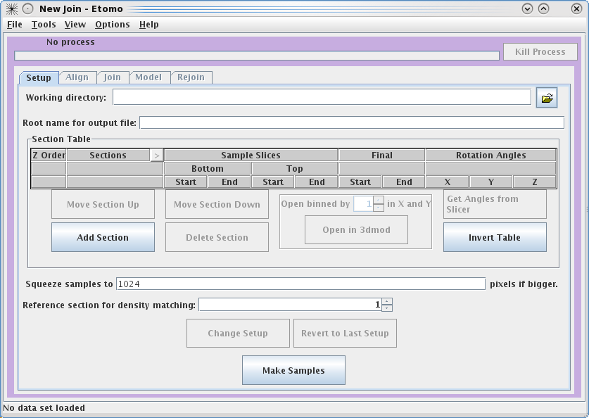
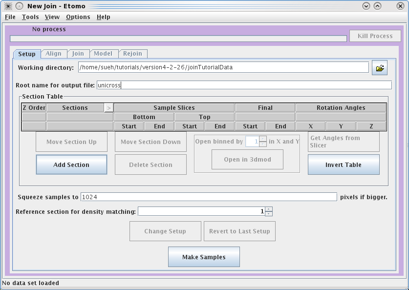
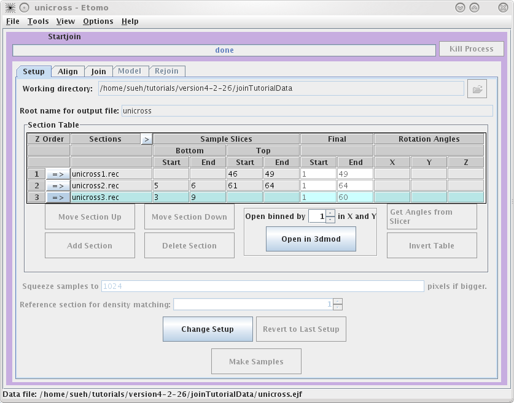

(IMOD Version 3.11)
Cindi L. Schwartz
Boulder Laboratory for 3D Electron Microscopy of Cells
I. Initial steps
This will create a directory,
II. eTomo Setup
To start eTomo, at the command line type: etomo
This tutorial provides a
step-by-step guide to joining together tomograms from serial sections,
using a small sample data set containing three volumes to be
joined. Before you try to join your own tomograms, please refer
to the more
comprehensive Guide to Joining Tomograms
for
additional detail about the decisions and options at each step.
To get started, download the sample data set from our web site. Unpack the data by typing:
tar -xzf
joinTutorialData.tar.gz
or, on an SGI, you will probably need two steps:
gunzip
joinTutorialData.tar.gz
tar -xf joinTutorialData.tar
This will create a directory,
joinTutorialData,
containing
the three serial volumes, named basal-1.rec, basal-2.rec, and
basal-3.rec.II. eTomo Setup
To start eTomo, at the command line type: etomo
This
will load the Setup
panel
for eTomo. To get to the join setup page go to the File
menu and choose New Join.

This
will load the Join Interface
shown below. The interface is divided into three panels: Setup, Align, Join, Model, and Rejoin. The Setup panel allows you to identify
which serial tomograms you would like to join, define the surfaces at
which they should be joined, flip or rotate the volumes relative
to each other, and extract sample slices from each serial tomogram so
that you can visualize the boundaries between the serial tomograms and
align them. You will notice that you cannot use the Align or Join tabs until you have finished
filling in the Setup
information and calculated your sample file.

To get started, select
your Working directory and Root name for output file. In this
example, we used a directory called
join and used unicross
for the root
name. You can enter the Working
directory by clicking
on the yellow file selection button associated with the Working
directory
field, or by typing in the directory path and file name directly in the
field. Since you already have all of the individual
reconstructions in the joinTutorialData directory, your
can make that be your working directory.
Next, you need to
select the serial
tomograms you want to join by pressing the Add Section
button. It will take you to your Working
directory and allow you to select a file for joining. (Note that
you
are not required to put your serial tomograms in your working
directory. eTomo will keep track of where your files are located). You
must
add each serial tomogram individually. The initial order is not
important
because you can change the order later.

Once you have input all three
datasets, click on
the arrow in the Order
subsection to highlight unicross1.rec.
Now click on the Open in 3dmod
button. This will open unicross1.rec
using 3dmod. These tutorial datasets are small in size; however, for
future data, you may need to use the binning option to view all of your
serial tomograms at once. Now, open the other two serial tomograms with
the Open in 3dmod
button. Once all three tomograms are loaded, you will typically movie
through them to
figure out the order of the serial tomograms and what slices you would
like to use to create the samples that are used in the aligning
process. It is important to note that Bottom
and Top are used in the
join software to denote that the 'top' of the section is the part of
the tomogram that matches up with the 'bottom' of the next section.
'Top' and 'bottom' DO NOT refer to the high Z and low Z portions of the
tomogram. So, the top of a section can be at either high or low Z. The
join programs will take care of any inversions in Z, both in
extracting sample slices and in assembling the final volume.
The 'Bottom' entry in the first row and the 'Top' entry in the last row are not
necessary because they don't match up to another tomogram.
To determine the Sample Slices you need, see the
entries we have used below. The goal here is to find a small subsection
of the ends of each serial tomogram that you can use to align. Note
that the Bottom of unicross2.rec
starts at Z=5. This is because the gold on the surface does not give
you any information to align with, so you need to go deeper into the
tomogram. You can also select the Final
Start and Final End of each tomogram now, but
you will get a chance to change this later on in the Join tab. These numbers
determine which slices will be placed into the final joined volume.

Once
you are satisfied with your decisions, press the Make Samples button. This creates
unicross.sample which will be used in conjunction with Midas to visually align the serial
tomograms together. After unicross.sample is created, you can now access
the Align and Join tabs. You will notice that you
can always come back and use Change
Setup to pick new Sample Slices
and start over.

III. Aligning the Sample Slices
The Align
tab allows you to align the
serial tomograms before joining them together. It is a good idea to Open Sample Averages in 3dmod. By
toggling through Z, you can see whether you have chosen the correct Sample Slices. For instance, toggle
between Z=1 and Z=2. You can see these are a close match by looking at the
cluster of vesicles in the lower right corner, but they are not aligned to
each other. Now you can choose to try auto alignment or manual
alignment of the serial tomograms. These tutorial tomograms lend
themselves well to auto alignment. Click on Initial Auto Alignment and wait for done to appear in the process bar.
Now, click on Midas. This will
load the program midas which allows you to see how well the auto
alignment worked.

The
first thing you will see in Midas
is an overlay view showing contrasting magenta and green colors that
help you align images. What is first displayed is the 'top' of
unicross1.rec aligned with the 'bottom' of unicross2.rec. Midas considers
each tomogram as a single 'chunk' of slices, so it is actually showing
the alignment of the bottom of 'chunk 2' to the top of 'chunk 1'.
You can use the Toggle Ref/Cur
button to see
the alignment better by
toggling between the images, and the PageUp and PageDown keys can also
be used to see one image at a time. If the sample slices being
displayed do not have a clear image of the structures at the surface of
the volume, then you can step deeper into either section by reducing
the Reference Sec. number or
increasing the Current Sec.
number. You can play around with Midas and try to align things
manually using the program. Midas lets you
shift, rotate, or stretch the current image with the left, middle, and
right mouse buttons, respectively. Otherwise,
make the Current Chunk 3 to
align the next pair of tomograms.

Now
you see the 'top' of unicross2.rec aligned with the 'bottom' of
unicross3.rec. You can also try and manually improve this alignment. If
you make changes you want to keep, be sure to save them under File-Save Transforms.

If you make changes and
realize that they aren't as good as the auto
alignment, you can always use the Revert
to No Transforms button and start over.
IV. Joining the Serial Tomograms
Once
you are happy with the alignments, you can now move to the Join tab. First, you can pick the
starting and ending slices of each
serial tomogram you would like to keep for the final volume. Again, you
are given the option to view each tomogram by using the Open in/Raise 3dmod button. These
serial tomograms provide an example where using the Get Max Size and Shift button can be
useful. The program will calculate the Size
and Shift in X and Y required to keep all original data
in the final volume and automatically put the numbers in the
proper fields. Now you can use the Trial
Join button to get a very quick idea of what your final volume
will look like. This is very useful with larger datasets because the
join process can take a long time. Once the Trial Join is finished, Open Trial in 3dmod to view it. The Get Subarea Size And Shift button is
used if you wish to crop the final volume to a particular area with the
rubberband feature in 3dmod. If you are happy with your Trial Join,
click Finish Join to create
your final volume. This could take a long time depending on the size of
your original datasets. Once the program has finished, use Open in 3dmod to see your
final volume called basal.join. Again, there is no need to use the
binning feature with these data, but it will likely be necessary for
real
datasets.